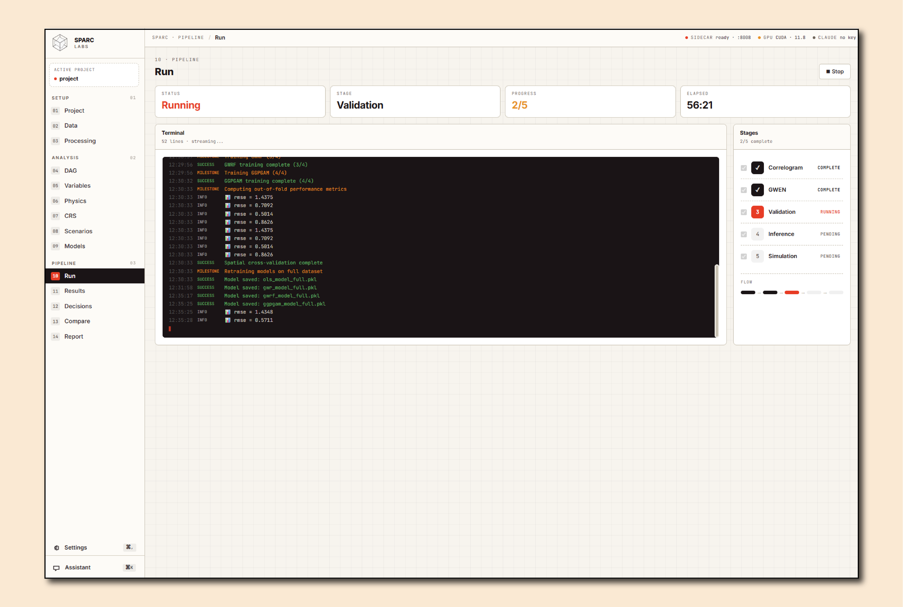
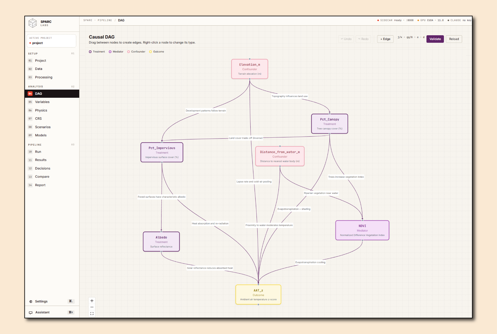
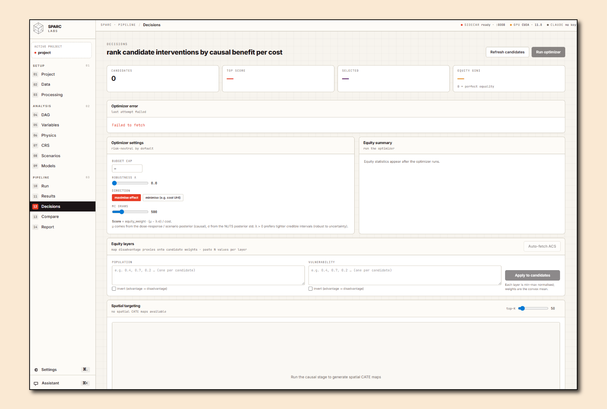
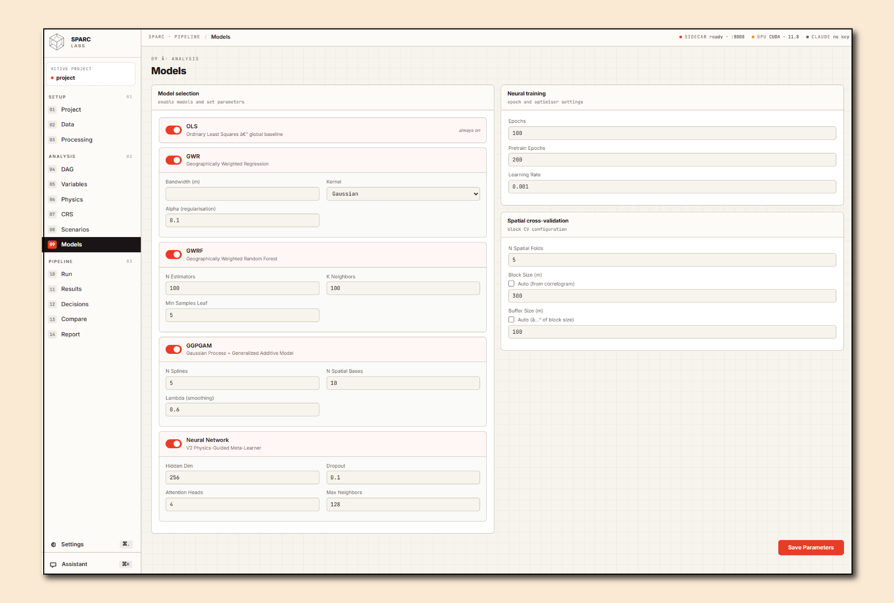

SPARC turns raw geospatial data into causal, uncertainty-quantified intervention plans — telling planners and policymakers not just what is happening, but what to do about it, and exactly how confident to be.
Municipalities, engineers, and federal agencies are drowning in spatial data but lack the analytical infrastructure to turn it into defensible, physics-grounded intervention plans.
Standard GIS tools and spatial regressions show associations, not causes. Decision-makers act on correlations and waste budget on ineffective interventions.
Existing tools have no way to simulate "what happens if we plant 10,000 trees here?" with physics constraints, uncertainty bounds, and spatial spillover effects.
ML predictions are uninterpretable, unverifiable, and fail regulatory scrutiny. Planners can't defend a neural network to a city council or grant panel.
Infrastructure and resilience spending lacks spatial allocation logic. No tool links causal effect size, cost surface, and equity metrics into a single optimized plan.
Municipal and federal datasets are confidential. Cloud-based analytics create data-sharing barriers that slow or block projects entirely.
Every environmental domain — heat, flood, air quality, seismic — requires a bespoke modeling stack. Building one from scratch takes years and costs millions.
SPARC executes five stages in sequence — from automatic spatial structure discovery to physics-constrained, budget-optimized intervention maps — driven entirely by a single project.yml configuration file.
Quantifies spatial autocorrelation (Moran's I) for every variable, fits Bayesian Matérn covariance models via NUTS, detects directional anisotropy, and packages everything into a KernelField that auto-configures all downstream stages — no manual bandwidth tuning required.
Ranks predictor importance spatially. An analyst approval gate lets domain experts inspect and prune variables before expensive model training begins.
Trains four geographically-weighted base models (OLS, GWR, GWRF, GGPGAM) on spatially-buffered folds, then fuses them through a PyTorch meta-learner with sparse spatial attention, MC-Dropout uncertainty, and a 10-term staged PDE loss covering heat diffusion, energy balance, Fourier flux, and more. Achieves 94.4% R² on urban heat in Providence, RI.
Given a user-defined causal DAG, produces full Bayesian posteriors over causal structure and effect magnitudes. MC³ MCMC searches over edge inclusion, DML estimates per-cell CATE with credible bands, NUTS samples edge posteriors, and DoWhy refutations test robustness. Every finding comes with an E-value quantifying how large a hidden confounder would need to be to nullify it.
Turns causal posteriors into counterfactual maps across four computational tiers (PDE α-field → Bayesian β → PDE solve → hybrid). Physics guardrails prevent extrapolation beyond training covariance. Budget-constrained allocation solves greedy / MILP optimization and sweeps a Pareto frontier over spending levels, scoring every solution for equity via Gini coefficient.
SPARC has been validated on two real-world deployments spanning urban heat at neighborhood scale and global climate forcing attribution.
Brown University campus & surrounding neighborhoods · 54,701 spatial points at ~30 m resolution · Published in Urban Climate (2025)
GCM ensemble sea-surface temperature forcing · 71,498 grid cells · 2.5° global grid (EPSG:6933 equal-area)
Each template ships with a pre-configured project.yml,
physics priors, constraint caps, and a causal DAG.
Point SPARC at your data and run — no methodology decisions required.
SPARC is the only platform that integrates geographically-weighted learning, Bayesian causal discovery, physics-constrained simulation, and budget optimization into a single, auditable pipeline.
MC³ DAG search, DML, NUTS edge posteriors, and DoWhy refutations produce defensible causal effect estimates — not correlation heat maps. Every finding ships with an E-value.
vs. ArcGIS / QGIS: correlation onlyA 10-term PDE loss (heat diffusion, energy balance, Fourier flux, anisotropy) is baked into model training — not bolted on after. Predictions respect thermodynamics.
vs. standard ML: physics-agnosticMC-Dropout (500 passes), NUTS posteriors, and bootstrap credible intervals propagate through to every scenario map. Planners see mean and spread — not false precision.
vs. point-estimate tools: no uncertaintyGreedy, greedy-2opt, and MILP solvers pair causal effect sizes with cost surfaces to produce a Pareto frontier of spend-vs-benefit — with equity (Gini) scoring on every plan.
vs. manual GIS planning: no optimizationRuns entirely on the analyst's machine via a native Tauri v2 desktop app. No cloud, no API keys, no data-sharing agreements. Sensitive municipal & federal data stays local.
vs. cloud SaaS: data sovereignty issuesSpatial non-stationarity is a first-class citizen. Bandwidths, kernel geometries, and anisotropy are auto-wired from Stage 0 — not assumed constant across space.
vs. global models: stationarity assumptionEvery artifact — model weights, NUTS samples, scenario configs — is versioned in an immutable artifact store and fully reproducible from the project.yml. Built for regulatory and grant review.
vs. notebook workflows: non-reproducible13 pre-configured templates mean a wildfire analyst and a coastal engineer run the same pipeline. Switching domains is a one-line YAML change, not a 6-month development sprint.
vs. bespoke models: years & millionsSPARC ships as a full native desktop application built with Tauri v2 and React. Lightweight, fast, and completely offline — your data never leaves the machine.




SPARC is not a concept — it is a working pipeline with peer-reviewed results, a native desktop app, and active development across multiple domains.
Out-of-fold spatial cross-validation on 54,701 points. Best-in-class for geographically-weighted models.
Peer-reviewed publication. DOI: 10.1016/j.uclim.2025.102671. Foundation methodology validated by journal review.
UHI, climate forcing, groundwater, air/water quality, coastal, wildfire, seismic, and more — shipping today.
Fully automated end-to-end: spatial structure → variable selection → ML → causal validation → scenario simulation.
Applied at both city-block scale (30 m, Providence RI) and global scale (2.5°, ForceSMIP climate data).
SharedTrunk + CityHead architecture, JEPA pretraining, V3 temporal terms, and budget-MILP optimizer — all shipping in v2.1.
SPARC bridges the gap between data scientists and decision-makers — giving analysts the rigor they need and planners the plain-language outputs they can defend.
Urban planners, sustainability offices, and public works departments need defensible evidence for capital investments. SPARC turns GIS data into causal intervention plans with uncertainty bounds city councils can approve.
Pilot Partner TargetEPA, USGS, NOAA, FEMA, and DOE programs require reproducible, physics-grounded spatial analysis for grant reporting and regulatory decisions. SPARC is 100% offline-capable for FISMA-sensitive environments.
SBIR TargetEnvironmental scientists, urban climatologists, and public health researchers who need reproducible causal spatial analysis without building bespoke ML pipelines from scratch.
Open for PartnershipsInfrastructure and environmental consulting firms that want to embed advanced causal-spatial analytics into client deliverables — differentiating their practice without in-house ML headcount.
Commercial LicenseResilience officers, climate adaptation planners, and NGOs allocating green infrastructure and resilience capital need spatial allocation logic that accounts for cost, benefit, and equity simultaneously.
High ImpactInstallations management, environmental health, and operational planning use cases requiring physics-constrained spatial modeling in air-gapped, on-premises environments.
SBIR / STTRSPARC Labs LLC is a small business actively pursuing SBIR and STTR funding to accelerate deployment into federal agency workflows and climate resilience programs.
Whether you're a city looking to pilot, a researcher seeking a collaborator, or a program manager evaluating SBIR proposals — we want to hear from you.
Run SPARC on your city's data. We provide setup support, training, and custom domain configuration.
Contact UsInterested in co-authoring a proposal or serving as a technical partner on a federal award?
Let's TalkApply SPARC to your research domain. We're open to joint publications and STTR collaborations.
Get in TouchSPARC Labs LLC · Providence, RI & Remote · Kyle Wire, Founder